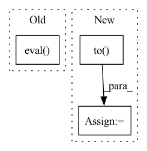

Pattern ID :39264
Before Change
def test_iter(self, metrics=None):
self.synthesis_ema.eval()
self.mapping_ema.eval()
z = self.input["z"]
class_idx = NoneAfter Change
img = img.permute((0, 2, 3, 1)) * 127.5 + 128
img = img.clamp(0, 255)
img = img.to( torch.uint8)
img_rgb = img.cpu().detach().numpy()[0]
img_bgr = img_rgb[:, :, [2, 1, 0]]
return img_bgr
In pattern: SUPERPATTERN
Frequency: 8
Non-data size: 3
Instances Fragment ID: 111500545
Project Name: miemie2013/miemiegan
Commit Name: c0604d858d8916f0f711432810ad1ec98036ca4b
Time: 2022-02-22
Author: 53960695+miemie2013@users.noreply.github.com
File Name: mmgan/models/architectures/styleganv2ada_model.py
M Class Name: StyleGANv2ADAModel
N Class Name: StyleGANv2ADAModel
M Method Name: test_iter(2)
N Method Name: test_iter(2)
M Parent Class: torch.nn.Module
N Parent Class: torch.nn.Module
M File Name: mmgan/models/architectures/styleganv2ada_model.py
N File Name: mmgan/models/architectures/styleganv2ada_model.py
M Start Line: 458
M End Line: 486
N Start Line: 474
N End Line: 481
Before Change
self._model = EMNISTNet(num_classes=num_classes)
self._model.load_state_dict(torch.load(model_filename, map_location=self._device))
self._model.eval()
def predict(self, inputs):
inputs: list of 2d numpy array containing N images where pixels lies beetwen 0 and 255After Change
logging.info(f"Using {self.device} device.")
self.tokenizer = Tokenizer(self.chars)
self.model = AttentionOCR(self.img_width, self.img_height, self.nh, self.tokenizer.n_token,
n_chars + 1, self.tokenizer.SOS_token, self.tokenizer.EOS_token).to(device=self.device)
self.model.load_state_dict(torch.load(model_filename, map_location=self.device))
self.model.eval()
Fragment ID: 111500533
Project Name: andreybicalho/vrpdr
Commit Name: daf497818875e24e9502e761bea83e6cbed1f909
Time: 2020-06-17
Author: andreybicalho@gmail.com
File Name: src/ocr.py
M Class Name: OCR
N Class Name: OCR
M Method Name: __init__(5)
N Method Name: __init__(5)
M Parent Class:
N Parent Class:
M File Name: src/ocr.py
N File Name: src/ocr.py
M Start Line: 12
M End Line: 30
N Start Line: 15
N End Line: 39
Before Change
logger.info("Templates are \n{}".format("\n".join(self.templates_text)))
def generate(self):
self.template_generate_model.eval()
with torch.no_grad():
self.get_templates()
self._show_template()
return self.templates_textAfter Change
template_for_auto_t = LMBFFTemplateGenerationWrapper.from_config(config=self.config.template, tokenizer=self.tokenizer, verbalizer = self.verbalizer)
dataloader = PromptDataLoader(dataset, template_for_auto_t, self.tokenizer, self.tokenizer_wrapper, batch_size=len(dataset)) // register all data at once
for data in dataloader:
data = data.to( self.device)
self._register_buffer(data)
self.model.eval()
with torch.no_grad(): Fragment ID: 111500528
Project Name: thunlp/openprompt
Commit Name: 071b9b92e6cefb3021b22e9813f175500260fda4
Time: 2021-11-08
Author: yl-chen17@mails.tsinghua.edu.cn
File Name: openprompt/prompts/prompt_generator.py
M Class Name: TemplateGenerator
N Class Name: TemplateGenerator
M Method Name: generate(2)
N Method Name: generate(1)
M Parent Class:
N Parent Class:
M File Name: openprompt/prompts/prompt_generator.py
N File Name: openprompt/prompts/prompt_generator.py
M Start Line: 167
M End Line: 168
N Start Line: 254
N End Line: 268
Before Change
trainloader = torch.utils.data.DataLoader(trainset, shuffle = True, batch_size = args.batch_size)
resnet50 = models.resnet50(pretrained = True).to(device).eval()
bert = BertModel.from_pretrained("bert-base-uncased").to(device).eval()
model = Towers(len(np.unique(y))).to(device)
opt = RMSprop(model.parameters(), lr = args.lr, momentum = 0.9)
for e in range(args.epochs):After Change
trainloader = torch.utils.data.DataLoader(trainset, shuffle = True, batch_size = args.batch_size, drop_last= True)
resnet50 = models.resnet50(pretrained = True).to(device)
resnet50 = torch.nn.Sequential(*(list(resnet50.children())[:-1])).to( device)
bert = BertModel.from_pretrained("bert-base-uncased").to(device)
for param in resnet50.parameters():
param.requires_grad = False Fragment ID: 111500547
Project Name: amanjain1397/huse
Commit Name: 5937721f1f9b59fcfb5f1ce0e3a34797a83e9302
Time: 2020-06-11
Author: amanjain1397@gmail.com
File Name: main.py
M Class Name: AnonimousClass
N Class Name: AnonimousClass
M Method Name: train(1)
N Method Name: train(1)
M Parent Class:
N Parent Class:
M File Name: main.py
N File Name: main.py
M Start Line: 76
M End Line: 109
N Start Line: 76
N End Line: 117
Before Change
class MockLazyAgent(LazyAgent):
def act(self, states, reward=None):
self._states = states
actions = self.models["policy"].eval( states.to(self.device))
actions += self._noise.sample([actions.shape[0]])
self._actions = Action(actions).to("cpu")
return self._actions
After Change
self._state = state
with torch.no_grad():
action = self.policy_model(
state.to( self.policy_model.device) )
self._action = Action(action).to("cpu")
return self._action Fragment ID: 111500530
Project Name: syuntoku14/pytorch-rl-il
Commit Name: 17b19de93a6ea81a39eba48bf58330970ecdc6a5
Time: 2020-04-04
Author: syuntoku14@gmail.com
File Name: rlil/samplers/tests/sampler_test.py
M Class Name: MockLazyAgent
N Class Name: MockLazyAgent
M Method Name: act(3)
N Method Name: act(3)
M Parent Class:
N Parent Class: LazyAgent
M File Name: rlil/samplers/tests/sampler_test.py
N File Name: rlil/samplers/tests/sampler_test.py
M Start Line: 16
M End Line: 19
N Start Line: 34
N End Line: 46
Before Change
return result
def evaluate_model(self, dataloader, metrics=CLASSIFICATION_METRICS.keys()):
self.eval()
// initialize counters
y_true = []
y_pred = []After Change
outputs = self.predict(images.to(self.device))
if criterion:
batch_loss = criterion(outputs, labels.to( self.device) )
total_loss += batch_loss.item()
total += 1
Fragment ID: 111500541
Project Name: biasvariancelabs/aitlas
Commit Name: 911a3c5d4be59008b2baaf45a32af55840b8586c
Time: 2020-09-26
Author: ivan.kitanovski@gmail.com
File Name: aitlas/base/classifiers.py
M Class Name: BaseClassifier
N Class Name: BaseClassifier
M Method Name: evaluate_model(4)
N Method Name: evaluate_model(3)
M Parent Class: BaseModel
N Parent Class: BaseModel
M File Name: aitlas/base/classifiers.py
N File Name: aitlas/base/classifiers.py
M Start Line: 125
M End Line: 145
N Start Line: 138
N End Line: 179
Before Change
def get_outputs(self, args, dataloader, model):
model.eval()
total_labels = torch.empty(0,dtype=torch.long).to(self.device)
total_preds = torch.empty(0,dtype=torch.long).to(self.device)
total_features = torch.empty((0,args.feat_dim)).to(self.device)
After Change
self.model.eval()
total_labels = torch.empty(0, dtype=torch.long).to(self.device)
total_logits = torch.empty((0, args.num_labels)).to( self.device)
total_features = torch.empty((0, args.feat_dim)).to(self.device)
total_preds = torch.empty(0, dtype=torch.long).to(self.device)
for batch in tqdm(dataloader, desc="Iteration"):
batch = tuple(t.to(self.device) for t in batch)
input_ids, input_mask, segment_ids, label_ids = batch
with torch.set_grad_enabled(False):
features, logits = self.model(input_ids, segment_ids, input_mask)
total_labels = torch.cat((total_labels, label_ids))
total_logits = torch.cat((total_logits, logits))
total_features = torch.cat((total_features, features))
if get_feats:
feats = total_features.cpu().numpy()
return feats
else:
total_probs = F.softmax(total_logits.detach(), dim = 1)
total_maxprobs, total_preds = total_probs.max(dim = 1)
y_true = total_labels.cpu().numpy() Fragment ID: 111500540
Project Name: thuiar/textoir
Commit Name: 203370e17d2a3452b90670171b60c44cb1500bcd
Time: 2021-08-03
Author: zhang-hl20@mails.tsinghua.edu.cn
File Name: open_intent_discovery/methods/semi_supervised/MCL_BERT/manager.py
M Class Name: MCLManager
N Class Name: MCLManager
M Method Name: get_outputs(4)
N Method Name: get_outputs(4)
M Parent Class:
N Parent Class:
M File Name: open_intent_discovery/methods/semi_supervised/MCL_BERT/manager.py
N File Name: open_intent_discovery/methods/semi_supervised/MCL_BERT/manager.py
M Start Line: 20
M End Line: 40
N Start Line: 93
N End Line: 130
Before Change
valset = ImageTextDataset(X, y, transform)
valloader = torch.utils.data.DataLoader(valset, shuffle = False, batch_size = 1)
resnet50 = models.resnet50(pretrained = True).to(device).eval()
bert = BertModel.from_pretrained("bert-base-uncased").to(device).eval()
model = Towers().to(device).eval()
model.load_state_dict(torch.load(args.model))After Change
valloader = torch.utils.data.DataLoader(valset, shuffle = False, batch_size = 1)
resnet50 = models.resnet50(pretrained = True).to(device)
resnet50 = torch.nn.Sequential(*(list(resnet50.children())[:-1])).to( device) .eval()
bert = BertModel.from_pretrained("bert-base-uncased").to(device).eval()
model = Towers().to(device).eval() Fragment ID: 111500523
Project Name: amanjain1397/huse
Commit Name: 5937721f1f9b59fcfb5f1ce0e3a34797a83e9302
Time: 2020-06-11
Author: amanjain1397@gmail.com
File Name: main.py
M Class Name: AnonimousClass
N Class Name: AnonimousClass
M Method Name: evaluate(1)
N Method Name: evaluate(1)
M Parent Class:
N Parent Class:
M File Name: main.py
N File Name: main.py
M Start Line: 151
M End Line: 180
N Start Line: 159
N End Line: 190